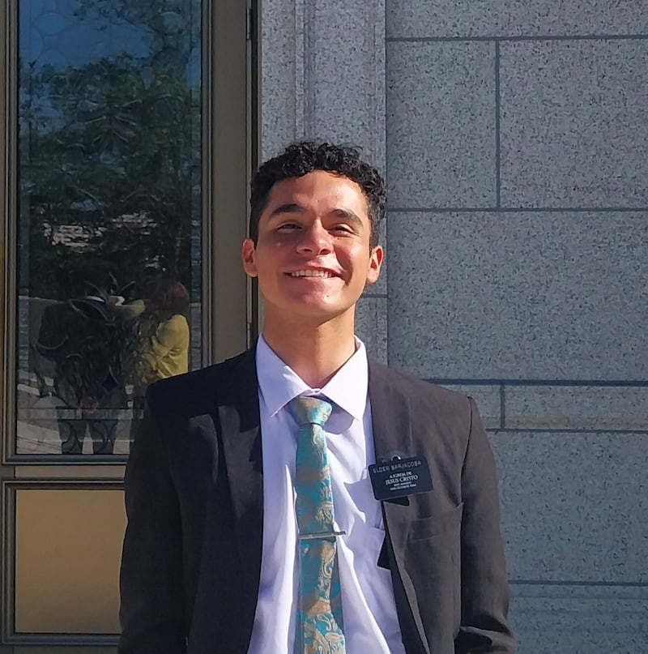

Ezequiel Matias Barjacoba | WDD 130
My name is Ezequiel Matias Barjacoba. I am from Córdoba, Argentina. I am the eldest of four siblings. Everyone in my family is a member of the Church of Jesus Christ of Latter-Day Saints. We moved to this city to have a Temple near us! I served my mission in Brazil, Feira de Santana (Bahia State). I served there from April 2023 to May 2025. I know how to speak there languages: spanish, english, and portuguese. I love reading, I love teaching, and I love creating pretty much anything that represents me as a person! From lyrics to songs and melodies, to a basic website like this one. I'm excited to keep learning and to keep growing my abilities within the programming field.